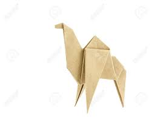
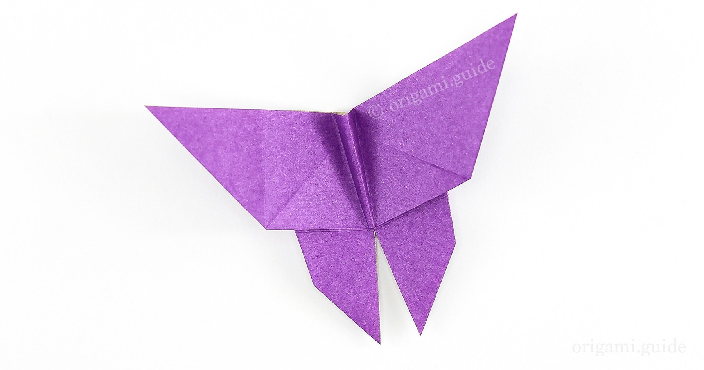

Origami Designs
About Us
Follow Us
Camels

Fun Facts about Camels
1. There are two types of camels: One humped or “dromedary” camels and two humped Bactrian camels.
2. Camels have three sets of eyelids and two rows of eyelashes to keep sand out of their eyes.
3. Camels have thick lips which let them forage for thorny plants other animals can't eat.
Butterfly

Fun Facts about Butterflys
1. Butterfly wings are transparent.
2. Butterflies use their feet to taste.
3. Butterflies sometimes meet up and gather around puddles.